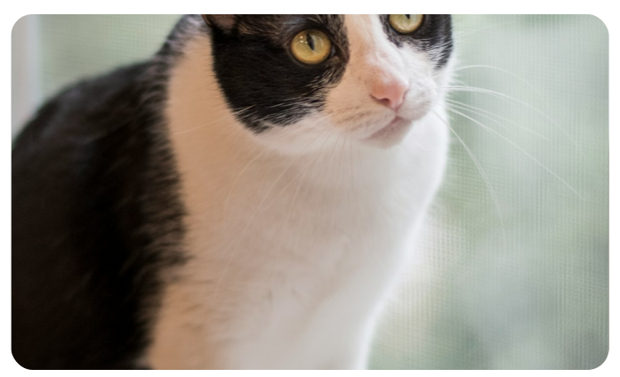
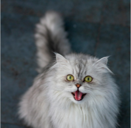
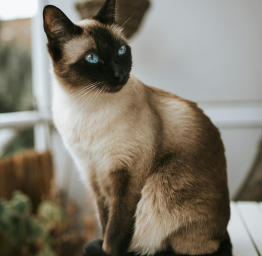

Добро пожаловать в мир котиков!
Здесь вы найдете всё самое интересное о наших пушистых друзьях. Узнайте больше о породах, характере и удивительных фактах о котах.
Популярные породы котов

Персидская

Сиамская

Британская короткошёрстная

Мейн-кун
Интересные факты о котах
- Коты спят в среднем 13-16 часов в день
- У котов отсутствуют рецепторы сладкого вкуса
- Коты могут издавать более 100 различных звуков
- Мурлыканье котов имеет частоту 25-150 Гц, что способствует заживлению костей
- Коты могут поворачивать уши на 180 градусов
- Группа котят называется "помёт", а группа взрослых котов - "клоудер"
- Коты имеют около 230 костей (у человека всего 206)
- Отпечаток носа кота уникален, как и отпечатки пальцев у человека